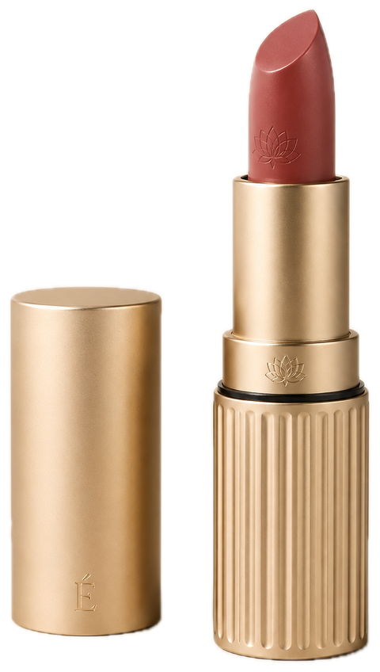
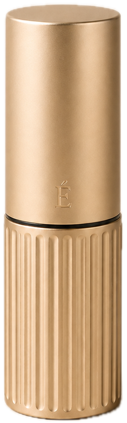
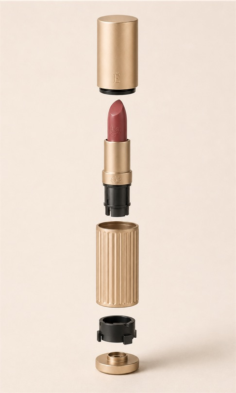

Own helix, from first principles
Tooling and performance risk the project does not need to own.
[ LAB · AS DESIGNED ][ INVESTIGATION · AS EVIDENCED ] [+]
A refillable lipstick concept: a champagne-anodised, 24-flute aluminium case that stays, around a cartridge on a supplier’s 12.7 mm mechanism that is replaced. Dimensions are proposed targets; every image is AI-generated.

1Ø21.5 × 76 mm closed · targetSpecified intent · proposed, not measuredInitial tolerance ±0.15 / ±0.5 mm
2Replaceable cartridge on a supplier Ø12.7 mm mechanism cupSpecified intent · supplier-controlled
3Lotus on the collar — seen only once the cap is offConcept · interaction signature
41.0 mm dark reveal ±0.15Specified intent
524 flutes · 0.30–0.40 mm radial depthSpecified intent
1Proposed targets only — no CAD, drawing, prototype or test existsNot claimed · nothing measured
202 cartridge on a supplier Ø12.7 mm mechanism — supplier not yet selectedSpecified intent · supplier-controlled
3Refill release method — to be resolved with the mechanism supplierTBC · open
4Moulded carrier / 04 locking insert should set the functional datums — not the decorative shellConcept · tolerance strategy
5≈39 + 1.0 + ≈40 = 80 vs 76.0 overall — part heights not yet reconciledTBC · noted on this sheet
Concept freeze 01. No CAD, drawing, prototype or test exists; nothing on this sheet was measured.
02 · Question
Premium lipsticks are usually thrown away whole, so the metal case and its decoration live only as long as the formula inside. ÉCLOS splits the object in two: a permanent case — cap, fluted shell, keyed locking insert, retaining base — and a replaceable cartridge holding bullet, cup, elevator, helix and collar. Instead of inventing its own helix, it builds around a supplier’s 12.7 mm mechanism and spends the design on what stays: grip, finish, and the moment the cap comes off.

Closed equals restraint. Opened equals discovery.
ÉCLOS complete report · design principle
03 · Mechanism
User sequence · cap off → twist → refill
A · Cap off · bullet retracted · the lotus on the collar shows
Exposure values are proposed targets (specified intent) and supplier-controlled. Rotation per millimetre belongs to the supplier mechanism and is not specified, so no angle is claimed — only the 24 × 15° flute index. The refill release method is still open (TBC).
Finish hierarchy · gloss at 60°
Satin shell + cap · champagne · 15–25 GU at 60° · bead blast + anodise · target
Gloss targets are specified intent; the band is drawn to show the hierarchy, not measured or rendered. One champagne family: the hierarchy is carried by gloss and texture, not by unrelated gold colours. The cylinder is tinted with the sampled shell champagne in every metal state.
04 · Inside
Kept · reusableReplaceable cartridgeProposed targetHiddenDatum

Proposed assembly flow
05 · Pigment & material
Champagne satin anodised
#C8AE85
≈ sampled · AI visualisation
Cap + shell · bead blast + anodise · 15–25 GU target
Rose bullet
#9E5A55
≈ sampled · AI visualisation
Muted warm rose · shade dependent
Charcoal reveal / carrier
#1C1C1C
≈ sampled · AI visualisation
Polymer · fine matte · 5–10 GU target
Studio cream
#EEE2D2
≈ sampled · AI visualisation
Image ground — not a product colour
Evening oxblood
#3A0A0E
≈ sampled · AI visualisation
Evening image ground — not a product colour
Rose-gold exploration
#D2B49A
≈ sampled · earlier AI exploration
Off-system · not carried into the masters
| Part | Substrate | Colour target | Finish | Gloss · 60° |
|---|---|---|---|---|
| Cap shell | Aluminium 5xxx or supplier equivalent | Champagne gold · master chip required | Fine bead blast + decorative anodise · laser-engraved mark | 15–25 GU |
| Outer shell | Aluminium 5xxx or supplier equivalent | Match cap within approved limit | Fine bead blast + decorative anodise · shallow flutes | 15–25 GU |
| Collar highlight | Aluminium or plated metal | Warm pale gold | Polished edge or selective high gloss | 70+ GU |
| Cap carrier | Engineering polymer · compatibility to confirm | Charcoal black | Low-sheen moulded texture | 5–10 GU |
| Locking insert | Engineering polymer · compatibility to confirm | Charcoal black | Fine matte moulded texture | 5–10 GU |
| Bullet | Cosmetic formula | Muted warm rose · shade dependent | Filled and finished by the formula supplier | Formula dependent |
| Lotus + mark | Base material, exposed or tonal | Tone on tone | Shallow laser engraving or embossing | Not separate |
06 · Decisions
A · Mechanism Concept · report decision
B · Grip Concept · report decision
C · Refill unit Concept · report decision
07 · Claim ledger
| Claim | Value | Level | Qualifier |
|---|---|---|---|
| Closed envelope | Ø21.5 × 76.0 mm | Specified intent | Proposed target · initial tolerance ±0.15 / ±0.5 mm |
| Cap · lower body | ≈39 · ≈40 mm | Specified intent | “Approx.” ±0.3 mm · sum vs 76.0 not reconciled (noted on this sheet) TBC |
| Reveal line | 1.0 mm ±0.15 | Specified intent | Assembly break and alignment control |
| Mechanism cup | Ø12.7 mm | Specified intent | Supplier-controlled · commercial mechanism benchmark |
| Bullet exposure | 18–22 mm normal · 28–30 mm max | Specified intent | Proposed targets · maximum supplier-controlled |
| Grip | 24 flutes · 0.30–0.40 mm (±0.05) | Specified intent | Angular index controlled |
| Wall · clearance | 0.6–0.8 mm · 0.15–0.25 mm per side | Specified intent | Process dependent · to be tolerance-stacked |
| Gloss at 60° | 15–25 GU shell · 70+ GU collar · 5–10 GU polymer | Specified intent | Approval on physical samples under D65 |
| Architecture | 5 assemblies · 1 insertion axis | Concept | Report architecture table |
| Ergonomics | ≈30–40° to the lower lip · grip on the flutes | Concept | Application intent, not observed with users |
| Status | Concept freeze 01 | Concept | Not production released |
| Imagery | AI-generated (gpt-image) | AI-generated | C2PA manifest in each file’s metadata: trained algorithmic media |
08 · Provenance, credits, revisions
| Rev | Date | Change |
|---|---|---|
| A | 6 Sep 2026 | Visualisation brief (“portfolio visualization specification”); closed, open and exploded AI masters (É-monogram set) |
| B | 6 Sep 2026 | Technical report and MFC specification — concept freeze 01 |
| C | 6 Sep 2026 | Complete design, technical and business report |
| D | 2 Oct 2026 | This sheet: vector schematics drawn from the target table |
09 · Next specimen
Field notes
Fragments from systems under pressure. Twelve principles — text only, no test data.
Open sheet 10